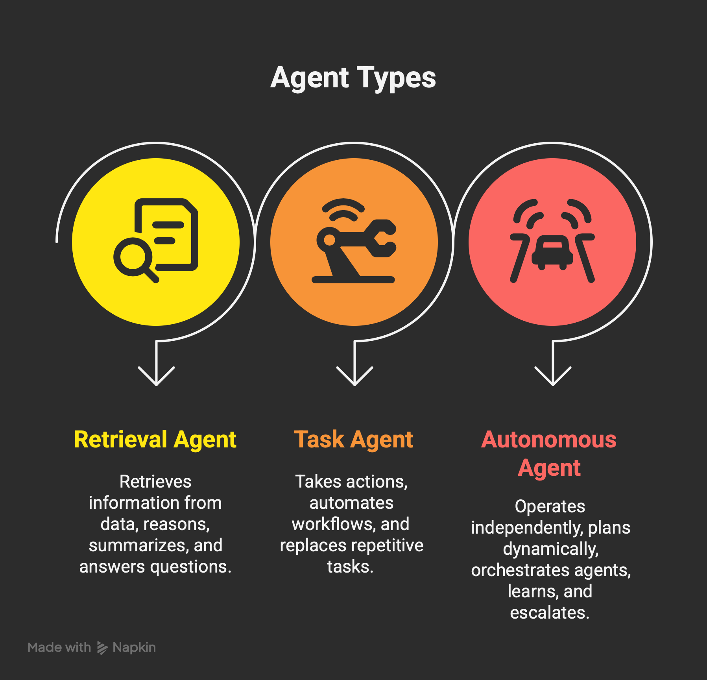
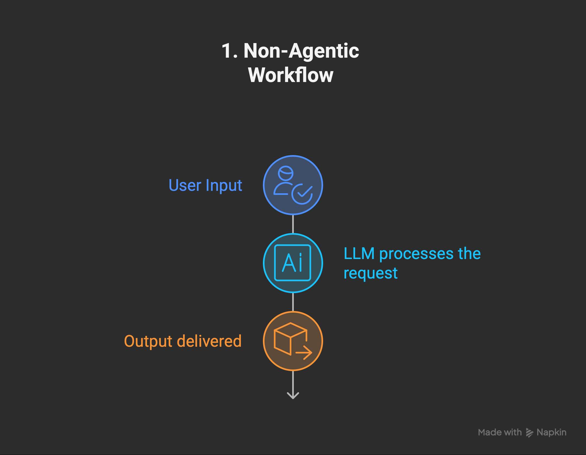
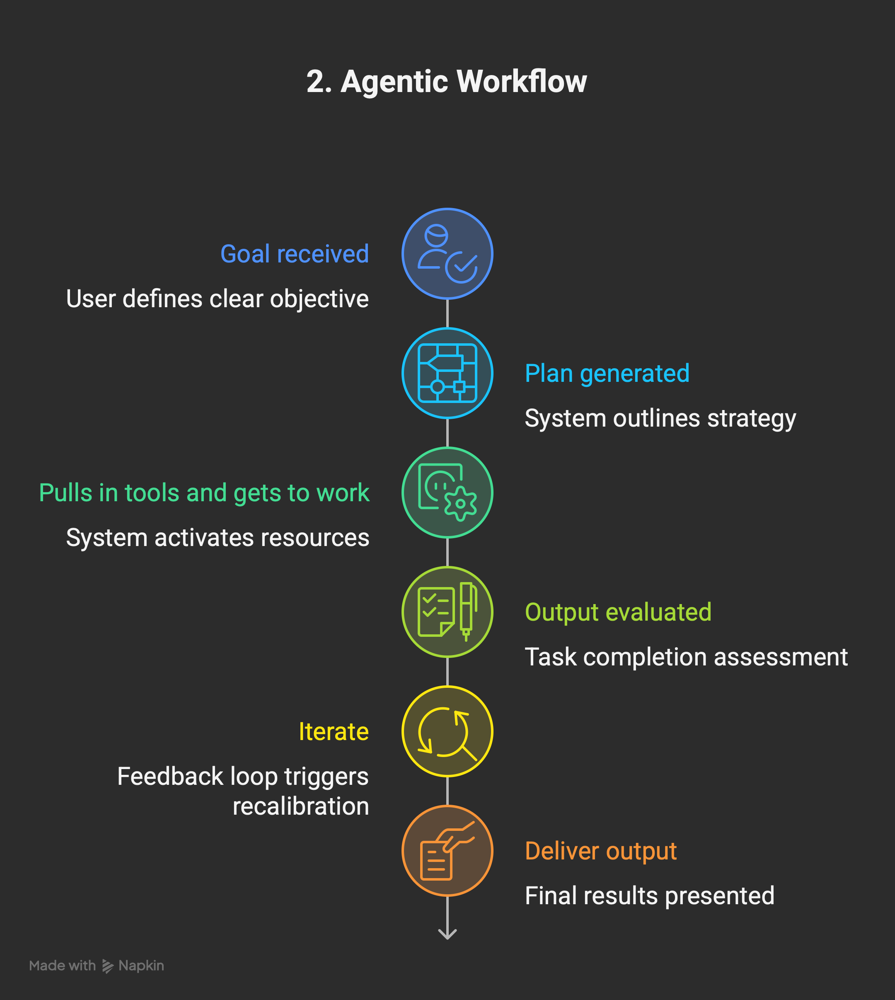
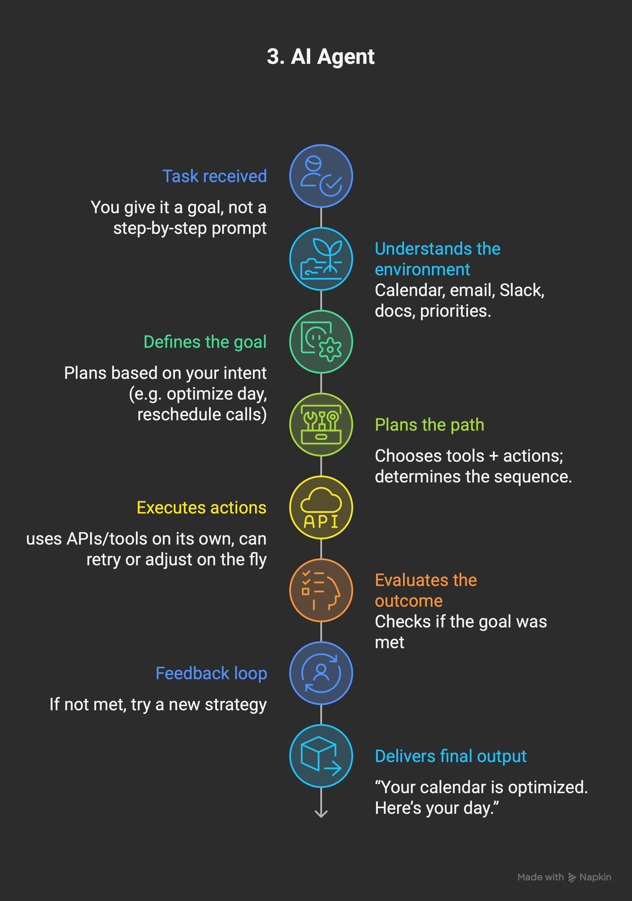
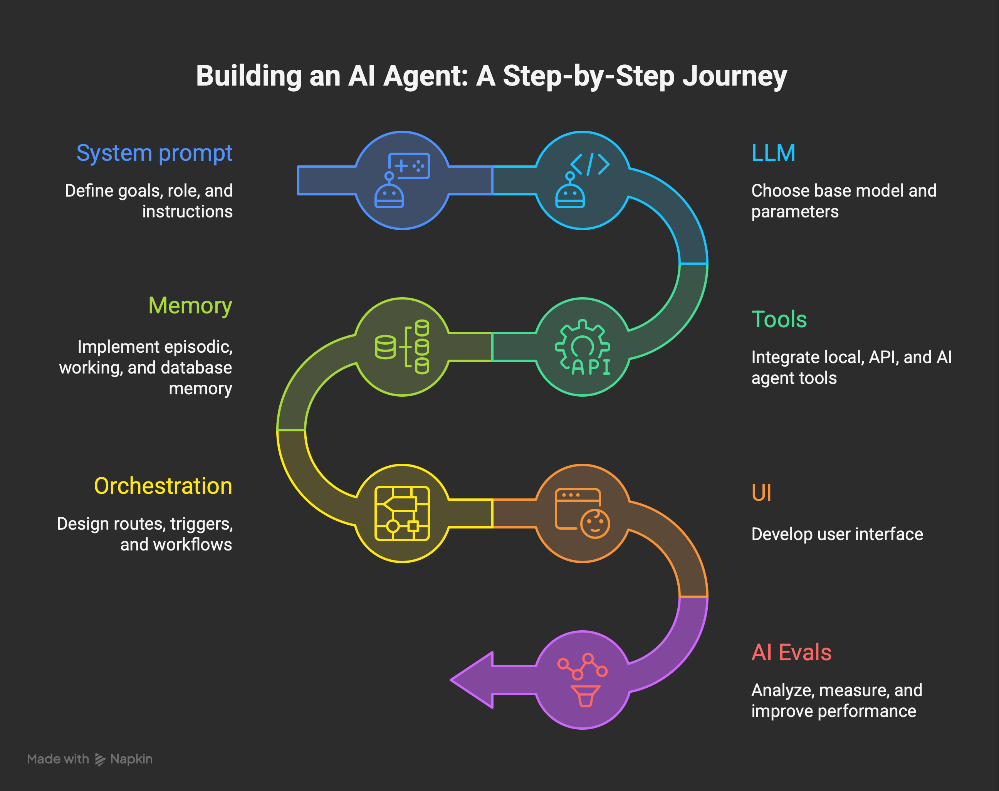

AI agents combine language models with orchestrated tools and data sources to perceive real-world signals, plan multi-step solutions, and act autonomously on a user's behalf.
Watch the AI Agents OverviewModern AI agents combine language models with orchestrated tools and data sources so they can observe real-world signals, plan multi-step solutions, and act autonomously or semi-autonomously on a user's behalf.
Agents ingest structured and unstructured data, including natural language, to understand user intent and environmental context.
They evaluate goals, decompose tasks, and determine next steps using chain-of-thought prompting and planning heuristics.
Agents execute tasks by calling external tools, invoking APIs, or generating content — and refine behavior based on feedback loops.
Modern agent design traces back to discrete prompt-engineering breakthroughs that made autonomous, multi-step reasoning possible.
Wei et al. showed that guiding models through intermediate reasoning steps dramatically boosts multi-hop problem solving — setting the stage for agents that explain and justify decisions. Read paper →
Dr. Jules White introduced role-specific scaffolds that unlock tool selection and memory strategies — catalogued in the Prompt Pattern Catalogue and via White et al.
White formalized the AI Planning pattern in ChatGPT Advanced Data Analysis, encouraging practitioners to externalize goal decomposition before autonomous agent operation.
Our team published findings showing how structured planning bridges prompt templates and autonomous agent stacks. Zhang et al. →
A production-grade AI agent is composed of four interlocking layers, each with distinct responsibilities.
Handles conversations, user prompts, and other inputs while presenting results back to the user.
Coordinates models, tools, and memory components so the agent can decide what to do next.
Provide language understanding, content generation, and the ability to interact with enterprise systems or third-party services.
Enforces policies, monitors for misuse, and ensures responses stay aligned with organizational standards.
Compare the common maturity levels to scope agent capabilities before adding orchestration, new tools, or autonomy.

Tap grounding data, reason over snippets, summarize, and answer scoped questions.
Take direct actions, call tools, and automate multi-step jobs when asked.
Plan dynamically, orchestrate other agents, learn from feedback, and escalate when needed.
Show how execution maturity evolves from single-shot prompts to fully autonomous agents so teams can pick the right operating model.

A one-off response or lightweight generation with no memory or tool usage. Think of it as querying a smart autocomplete. Example: Asking ChatGPT a single question and pasting the reply into your doc.

A co-pilot that iterates with you, calls tools, or keeps short-lived context — IDE copilots, spreadsheet helpers, etc. Example: GitHub Copilot suggesting code while you type.

Hand over the goal and let the system decide the plan, tools, and escalation path. Example: An AI executive assistant that reschedules meetings without step-by-step prompts.
A copy-ready recipe for shipping production-grade agents that blend prompts, tools, and evaluations.

openai:gpt-5) and reason through cost, latency, and context window tradeoffs.contain-json) plus domain-specific KPIs (accuracy, safety, tone).A comparison of major no-code and code-first agent frameworks by model support, MCP compatibility, tools, and orchestration style.
| No-code | Framework | LLM | MCP | Tools | Agents Orchestration |
|---|---|---|---|---|---|
| ✗ | OpenAI Agents API | OpenAI | Remote | Predefined (web, file/code) | Threads |
| ✗ | Google Vertex AI | * | Remote | Predefined (search, vision, etc.) | Flow-based, native A2A |
| ✗ | Anthropic Agents API | * | Remote | Predefined (web, file/code) | Tool-calling only |
| ✗ | Microsoft AutoGen | * | None | Predefined (REPL, code) | Programmatic chaining |
| ✓ | Autogen Studio | * | None | Predefined | Visual agent chaining |
| ✗ | LangGraph | Local, Remote | Local, Remote | LangChain Functions | Graph (DAG)-based flow |
| ✗ | LangChain | Local, Remote | Remote | Functions (custom-defined) | Manual (chains/agents) |
| ✗ | CrewAI | Local, Remote | Remote | Predefined, 40+ integrations | Flow- & role-based |
| ✓ | n8n | Local, Remote | Remote | Predefined, 100+ integrations | Workflows, sub-workflows |
Academic papers, framework documentation, and guides referenced in this overview.